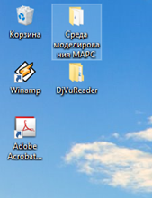
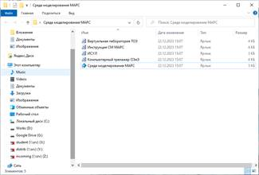
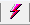

Построение временных и частотных характеристик систем автоматического управления в среде моделирования МАРС
Задача
Пусть необходимо построить переходную и частотные характеристики системы автоматического управления (САУ), структурная схема которой представлена на рисунке 1, а также определить установившееся значение, время переходного процесса, перерегулирование, резонансную частоту, частоту среза ЛАХ и фазу при частоте среза ЛАЧХ при изменении коэффициента демпфирования колебательного звена.
Рисунок 1 – Структурная схема исследуемой САУ
Даны следующие значения параметров звеньев:
· Пропорциональное звено
o Коэффициент усиления – 0.5
· Апериодическое звено
o Коэффициент усиления – 3
o Постоянная времени – 0.5 с-1
· Колебательное звено
o Коэффициент усиления – 1
o Постоянная времени – 0.2 с-1
o Коэффициент демпфирования – 0.5
Шаг 1. Формирование модели САУ
1.1. Открытие среды моделирования МАРС. Для запуска приложения «Среда моделирования МАРС» воспользуйтесь соответствующим ярлыком на рабочем столе, который показан на рисунке 2 или пунктом «Среда моделирования МАРС» в папке Revicom, находящейся в главном меню операционной системы Windows, представленной на рисунке 3.

Рисунок 2 – Запуск среды моделирования МАРС с рабочего стола
Рисунок 3 – Запуск среды моделирования МАРС из меню
В результате будет открыто основное окно среды моделирования МАРС, представленное на рисунке 4.
Рисунок 4 – Основное окно среды моделирования МАРС
1.2. Открытие новой схемы. Чтобы открыть новую схему, можно воспользоваться пунктом Создать схему в пункте Создать меню Файл или воспользоваться кнопкой на панели инструментов Стандартная. В результате проделанной операции будет открыта новая схема, представленная на рисунке 5.
Рисунок 5 – Открытие новой схемы в среде моделирования МАРС
1.3. Формирование модели объектного уровня. На объектном уровне формируется компьютерная модель исследуемой САУ из компонентов, находящихся в папке САУ -> Линейные САУ, представленной на рисунке 6.
Рисунок 6 – Дерево компонентов САУ
На рисунке 7 приведена сформированная модель объектного уровня без подключенных источников и измерительных компонентов.
Рисунок 7 – Компьютерная модель САУ на объектном уровне многоуровневой компьютерной модели
Шаг 2. Анализ САУ во временной области. Анализ САУ во временной области заключается в построении и исследовании переходной и/или импульсной характеристики, а также определении на ее основе показателей качества переходного процесса, к которым относятся установившееся значение, максимальное значение, время переходного процесса, перерегулирование и другие. Среда МАРС позволяет одновременно построить временную характеристику и определить необходимые показатели качества переходного процесса.
2.1 Установка источника входного сигнала. Для построения переходной характеристики САУ необходимо на её вход подключить источник единичного сигнала, находящийся в папке САУ -> Источники САУ, представленной на рисунке 8.
Рисунок 8 – Содержание папки САУ -> Источники САУ
Установив источник единичного сигнала ко входу исследуемой системы, получим её модель, представленную на рисунке 9.
Рисунок 9 – Компьютерная модель САУ
2.2 Установка измерительного компонента. Для измерения информационных сигналов, циркулирующих в исследуемых системах автоматического управления, используется измеритель информационного сигнала, находящийся в папке САУ, представленной на рисунке 8. Он на каждом шаге по времени измеряет текущее значение потенциальной переменной в узле, к которому этот измеритель подключен, и передает это значение вместе со значением времени с объектного слоя модели на её логический слой. При частотном анализе измеритель информационного сигнала выбирает из вектора решения цепи действительную и мнимую составляющие измеряемой переменной, формирует точку согласно заданной в атрибутах компонента характеристике и передает ее дальше для обработки и визуализации. Подключив один измеритель к выходу исследуемой системы для исследования выходной величины, во второй – между сумматором и пропорциональным звеном KI1 для исследования ошибки, получим компонентную цепь, приведенную на рисунке 10.
Рисунок 10 – Компьютерная модель САУ с подключенным источником и измерительными компонентами
2.3. Подключение графика. Для построения временных характеристик указанных сигналов к измерителям информационного сигнала VI1 и VI2, имеющим свои отображения как на объектном, так и на логическом слоях многослойного редактора, необходимо подключить компонент «График». Он находится в папке Визуальные компоненты -> Визуальные компоненты L-V -> Прочие, которая приведена на рисунке 11.
Рисунок 11 – Содержание папки Визуальные компоненты -> Визуальные компоненты L-V -> Прочие
При установке компонента График на логический или объектный слой редактора у него будет один свободный пин для образования связи с компонентами, передающими данные для построения различных зависимостей (см. рисунок 12).
Рисунок 12 – Компонент График на логическом уровне многоуровневой компьютерной модели
При соединении его свободного пина с пинами других компонентов всякий раз у него будет появляться новый свободный пин. Соединив свободные пины компонента График с измерителями информационных сигналов, получим схему, представленную на рисунке 13.
Рисунок 13 – Логический уровень многоуровневой модели исследования САУ
2.4 Задание параметров режима анализа. Для построения временных характеристик САУ используется динамический анализ во временной области. В среде МАРС выбор режима анализа и задание его параметров осуществляется в окне Настройка ядра, вкладка Динамика которого приведена на рисунке 14.
Рисунок 14 – Вкладка Динамика окна Настройка ядра
Выбрав в качестве директивы анализа Неявный метод Эйлера и
задав значения параметров директивы, как показано на рисунке 14,
необходимо нажать на кнопку
 .
.
2.5. Построение временных характеристик. Для построения временных характеристик необходимо запустить режим анализа сформированной компьютерной модели. Это можно сделать, нажав на кнопку Запуск  или воспользоваться пунктом Запуск меню Анализ. В результате этих действий в одном окне будут построены временные диаграммы выходной переменной и ошибки управления, пример которых продемонстрирован на рисунке 15.
Рисунок 15 – Временные характеристик выходной величины (черный цвет) и ошибки регулирования (зеленый цвет)
В окне Обозначение представлено соответствие между изображенными графиками/характеристиками и измерительными компонентами, с которых они сняты.
Описание окна График и его функциональные возможности приводятся в разделе 4.5 инструкции к среде моделирования МАРС.
2.6. Определение параметров-функционалов переходного процесса. Для определения параметров-функционалов временных и частотных характеристик исследуемых процессов, в том числе и переходных процессов в рамках библиотеки моделей компонентов среды МАРС реализованы блоки обработки данных, находящиеся в папке Компоненты языка МАК -> Блоки обработки. Содержание этой папки представлено на рисунке 16.

Рисунок 16 – Содержание папки Компоненты языка МАК -> Блоки обработки
Установим необходимые компоненты из этой папки на логический уровень создаваемой многоуровневой модели и соединим их входной пин с пином измерителя информационного сигнала VI1, измеряющий выходную переменную исследуемой САУ. Соединим выходной узел соответствующего блока обработки с отдельным цифровым табло, находящимся в папке Визуальные компоненты -> Визуальные компоненты L-V -> Прочие, представленной на рисунке 11. В результате этих действий на логическом слое редактора получим схему, представленную на рисунке 17. Для большей информативности визуального уровня изменим атрибут «Название компонента» и каждого цифрового табло. Верхний пин каждого блока обработки предназначен для подачи сигнала о начале очередного одновариантного анализа при решении задач многовариантного анализа и параметрической оптимизации моделей объектного уровня. Поэтому в этом случае их можно оставить не подцепленными к пинам других компонентов.
Рисунок 17 – Логический уровень модели САУ для исследования её временных характеристик
Расставив соответствующие цифровые табло на визуальном слое редактора, перетаскивая их мышью, после запуска модели САУ на анализ получим изображение визуального слоя, представленное на рисунке 18.
Рисунок 18 – Результаты работы блоков обработки на визуальном слое многослойного редактора
Шаг 3. Анализ модели САУ в частотной области. Анализ САУ в частотной области предполагает построение всех частотных характеристик, а также определение таких показателей качества функционирования, к которым относятся резонансная частота, частота среза, фаза при частоте среза, запасы устойчивости по амплитуде и фазе. Инструментальные средства среды моделирования МАРС обеспечивают одновременное построение всех частотных характеристик и определение перечисленных показателей качества. Для этого необходимо выполнить следующие действия.
3.1 Установка источника входного сигнала. Для исследования САУ в частотной области на вход её модели, представленной на объектном уровне многоуровневой компьютерной модели, необходимо подключить источник синусоидальный. Он находится в папке САУ -> Источники САУ, представленной на рисунке 8. В результате этих действий модель должна выглядеть примерно так, как показано на рисунке 19.
Рисунок 19 – Подключение источника синусоидального ко входу модели САУ
3.2 Подключение измерительных компонентов. Для построения всех необходимых частотных характеристик и их совместного исследования подключим к выходному узлу модели САУ одновременно пять измерителей информационного сигнал ил папки САУ дерева компонентов, представленного на рисунке 8. В свойствах каждого из компонентов в качестве значения атрибута «Вид частотной характеристики» выберем подлежащую построению с его помощью характеристику. В результате модель объектного уровня должна быть такой, как показано на рисунке 20.
Рисунок 20 – Модель САУ для построения и исследования частотных характеристик
3.3 Подключение измерительных компонентов к компоненту График. Установленные на шаге 3.2 измерительные компоненты имеют свои отображения на объектном и на логическом слоях редактора. На логическом слое редактора подключим к каждому из них отдельный компонент «График», находящийся в папке Визуальные компоненты -> Визуальные компоненты L-V -> Прочие. В результате этих действий получим модель, представленную на рисунке 21.
Рисунок 21 – Логический уровень модели САУ для построения частотных характеристик
3.4 Построение частотных характеристик. Чтобы убедиться в работоспособности системы построим частотные характеристики исследуемой САУ. Для этого вызовем окно Настройка ядра, в нём перейдём на вкладку Частотный анализ, выберем директиву АЧХ и зададим частотный диапазон и шаг, с которым будет измеряться частота при расчете частотных характеристик. При этом рекомендуется начальную частоту также указывать отличную от 0. На рисунке 22 приведена вкладка Частотный анализ с настроенными параметрами.
Рисунок 22 – Окно «Частотный анализ» окна настройки ядра
На рисунке 23 представлены построенные частотные характеристики исследуемой модели САУ.
Рисунок 23 – Результаты построения частотных характеристик исследуемой САУ
3.5 Определение параметров-функционалов частотных характеристик. Для определения резонансной частоты, частоты среза ЛАЧХ и фазы при этой частоте на логическом уровне редактора необходимо выполнить следующие действия:
1. Так как резонансная частота – это частота, на которой наблюдается максимальное значение амплитудно-частотной характеристики (АЧХ), то для ее определения следует использовать компонент Время наступления максимума, находящийся в папке Компоненты языка МАК -> Блоки обработки. На логическом слое модели этот компонент называется TMAX1. Соединим его с выходным пином компонента АЧХ.
2. Для определения частоты среда необходимо использовать компонент Частота среза ЛАЧХ, который находится в этой же папке. Этот компонент на логическом слое модели носит название w_cuttof1. Подсоединим входной пин этого компонента, находящийся слева, к компоненту ЛАХ.
3. Определение фазы при частоте среда осуществляется компонентом Фаза при частоте среза ЛАЧХ. Установим этот компонент на логический слой модели. При этом он получит название F(w_cuttof)1. Подключим входной пин, находящийся слева от компонента, к компоненту ЛАХ, а верхний пин к компоненту ФЧХ.
4. К выходным пинам перечисленных компонентов установим цифровые табло, которые назовем соответственно «Резонансная частота», «Частота среза ЛАЧХ», «Фаза при частоте среза».
Проделав описанные действия, получим схему, представленную на рисунке 24.
Рисунок 24 – Логический уровень модели САУ для исследования её частотных характеристик
В результате запуска модели на анализ с помощью пункта меню Анализ -> Запуск на визуальном уровне получим результаты моделирования, представленные на рисунке 25.
Рисунок 25 – Результаты исследования частотных характеристик САУ
Шаг 4. Сохранение исследуемой модели. Для сохранения исследуемой модели для дальнейшего использования можно воспользоваться пунктом Сохранить или Сохранить как в меню Файл или сочетанием клавиш Ctrl+S. После этого, если имя файла не было задано, появится стандартное диалоговое окно операционной системы Windows, в котором необходимо будет задать имя файла и папку, в которой он должен находиться.
Минимальные системные требования:
Процессор: c двумя и более физическими ядрами, поддерживающий технологию SSE2
Видеокарта: GeForce 8600/ATI Radeon HD 4550M
Оперативная память: 2 ГБ для Windows 7/8/10
Операционная система: Windows 7/8/10
Место на диске: 40 ГБ
Рекомендуемые системные требования:
Процессор: Intel Core i5-7400 / AMD Ryzen 5 1500X
Видеокарта: NVIDIA® GeForce GTX 1050 Ti 4 ГБ / NVIDIA® GeForce GTX 1650 4 ГБ / Radeon RX 570 (4 ГБ)
Оперативная память: 8 Гб
Операционная система: Windows 7/8/10 — 64-bit
Место на диске: 61.5 ГБ
Скорость интернет-соединения: 1024 Кбит/с или выше (для работы голосового чата)